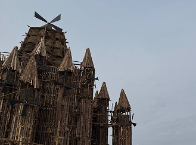
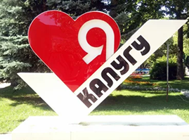
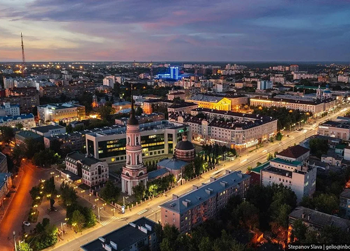

Карта\\Калуга
Калуга



Калуга. Застывшая на Оке провинциальная душа. Мощные соборы, парки с видом на речные дали. Здесь Циолковский размышлял о звёздах, а история дышит в каждом камне старинных палат. Музеи космонавтики и народного быта откроют для вас разные грани времени. Здесь прошлое встречается с будущим, а тишина провинции дарит умиротворение. Готовы ли вы прикоснуться к истокам?